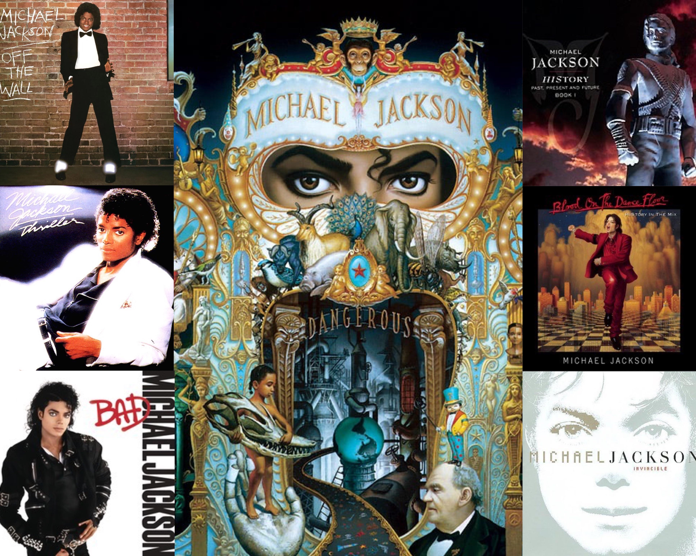

<!DOCTYPE html>
<html lang="en">
<head>
    <meta charset="UTF-8">
    <meta name="viewport" content="width=device-width, initial-scale=1.0">
    <title>discos</title>
</head>
<body>
    
</body>
</html>


<h1> sus Discos</h1>


<h2><li>Got to Be There (1972)

Su primer álbum como solista, lanzado cuando aún formaba parte de los Jackson 5.</li>

<li>Ben (1972)

Famoso por la canción del mismo nombre, que se convirtió en su primer gran éxito número uno en solitario.</li>

<li>Music & Me (1973)

Un disco de transición durante su época de adolescencia con la discográfica Motown.</li>

<li>Forever, Michael (1975)

El último álbum que grabó con Motown antes de cambiar de sello discográfico y revolucionar su sonido.</li>

<li>Off the Wall (1979)

El primer gran éxito de su adultez, producido por Quincy Jones. Incluye joyas como "Don't Stop 'Til You Get Enough".</li>

<li>Thriller (1982)

El álbum más vendido de la historia de la música. Contiene "Billie Jean", "Beat It" y "Thriller".</li>

<li>Bad (1987)

El disco de "Smooth Criminal" y "The Way You Make Me Feel". Tuvo cinco canciones consecutivas en el puesto número uno.</li>

<li>Dangerous (1991)

Un sonido más moderno con la llegada del New Jack Swing. Incluye "Black or White" y "Remember the Time".</li>

<li>HIStory: Past, Present and Future, Book I (1995)

Un álbum doble: el primer disco recopilaba sus grandes éxitos y el segundo traía canciones nuevas como "They Don't Care About Us".</li></h2>
<h2>Sus canciones mas conocidas </h2>
<ol>
    <li> 🎵 Billie Jean</li>
    <li> 🎵 Thriller</li>

<li>🎵 Beat It</li>
<li>🎵 Smooth Criminal</li>
<li> 🎵 Bad</li>
<li>🎵Black or White</li>
<li> 🎵 Man in the Mirror</li>
<li>🎵 They Don’t Care About Us</li></ol>

<style>
    body {
        background-image: url(imagenes/andrei-castanha-mAoMkGo4LGg-unsplash.jpg); 
        background-repeat: no-repeat; 
        background-size: cover; 
        background-position: center; 
        background-attachment: fixed; 
    }


    
</style>
</body>





<a href="https://www.youtube.com/watch?v=bdGseK7U7A0">Haz clic aquí para ver todos sus albunes </a>
</body>

<!-- El Botón Flotante -->
<a href="index.html" class="boton-flotante" title="Volver al inicio">
  ↑ Inicio
</a>

<style>
  /* Estilos para que el botón te siga y se vea genial */
  .boton-flotante {
    position: fixed;        /* Hace que se quede fijo en la pantalla */
    bottom: 20px;          /* Distancia desde abajo */
    right: 20px;           /* Distancia desde la derecha (podés cambiarlo a 'left' si preferís) */
    background-color: #b10d0d; /* Color de fondo (azul, cambialo a gusto) */
    color: white;          /* Color del texto */
    padding: 12px 18px;    /* Tamaño del botón */
    border-radius: 50px;   /* Bordes redondeados */
    text-decoration: none; /* Saca el subrayado común de los links */
    font-weight: bold;     /* Letra negrita */
    font-family: Arial, sans-serif;
    box-shadow: 0px 4px 10px rgba(177, 14, 14, 0.562); /* Sombra para que flote visualmente */
    z-index: 1000;         /* Se asegura de que siempre quede por encima de todo lo demás */
    transition: all 0.3s ease; /* Efecto suave al pasar el mouse */
  }

  /* Efecto cuando pasás el mouse por arriba */
  .boton-flotante:hover {
    background-color: #c70606; /* Un azul más oscuro */
    transform: scale(1.1);     /* Se agranda un poquito */
  }
</style>


